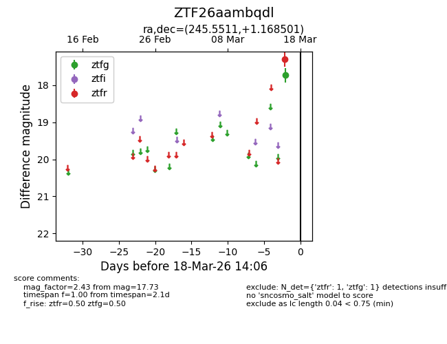
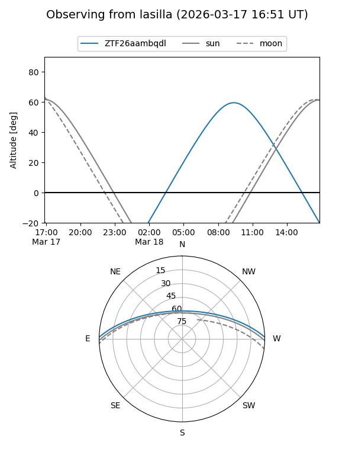
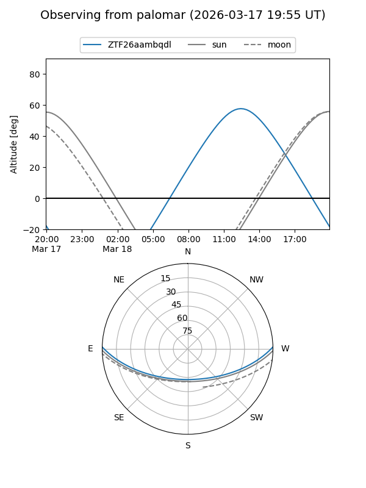

ZTF26aambqdl
Target ZTF26aambqdl at 2026-03-18 14:08
Aliases and brokers:
FINK: link
Lasair: link
ALeRCE: link
alt names
ZTF26aambqdl (ztf,fink_ztf)
Coordinates:
equatorial (ra, dec) = 245.5511,+1.16850
equatorial (HMS+DMS) = 16:22:12.26,+01:10:06.60
galactic (l, b) = (14.9460,+33.27189)
Flags:
Photometry:
last ztfg=17.73, ztfr=17.29
1 ztfg, 1 ztfr detections
Lightcurve

Visibility


Additional plots